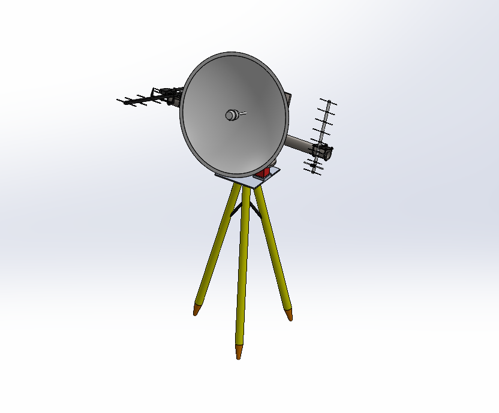
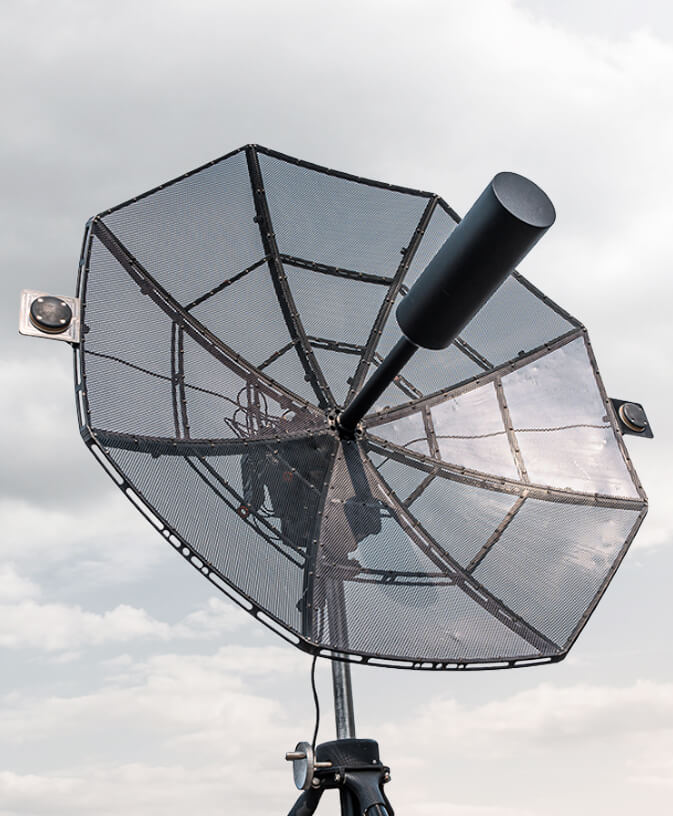
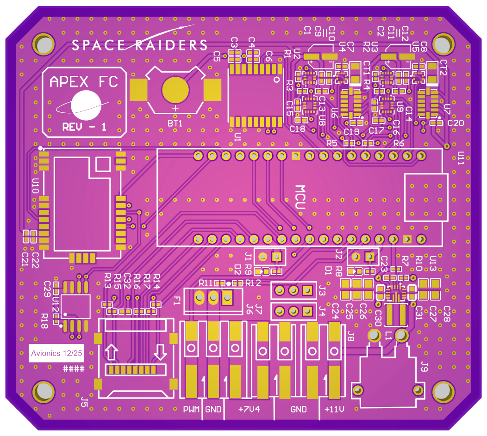
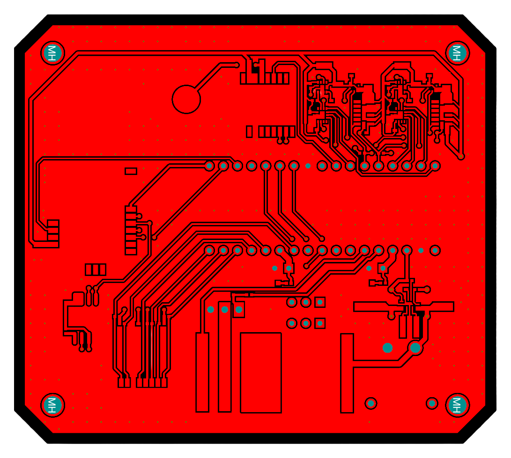
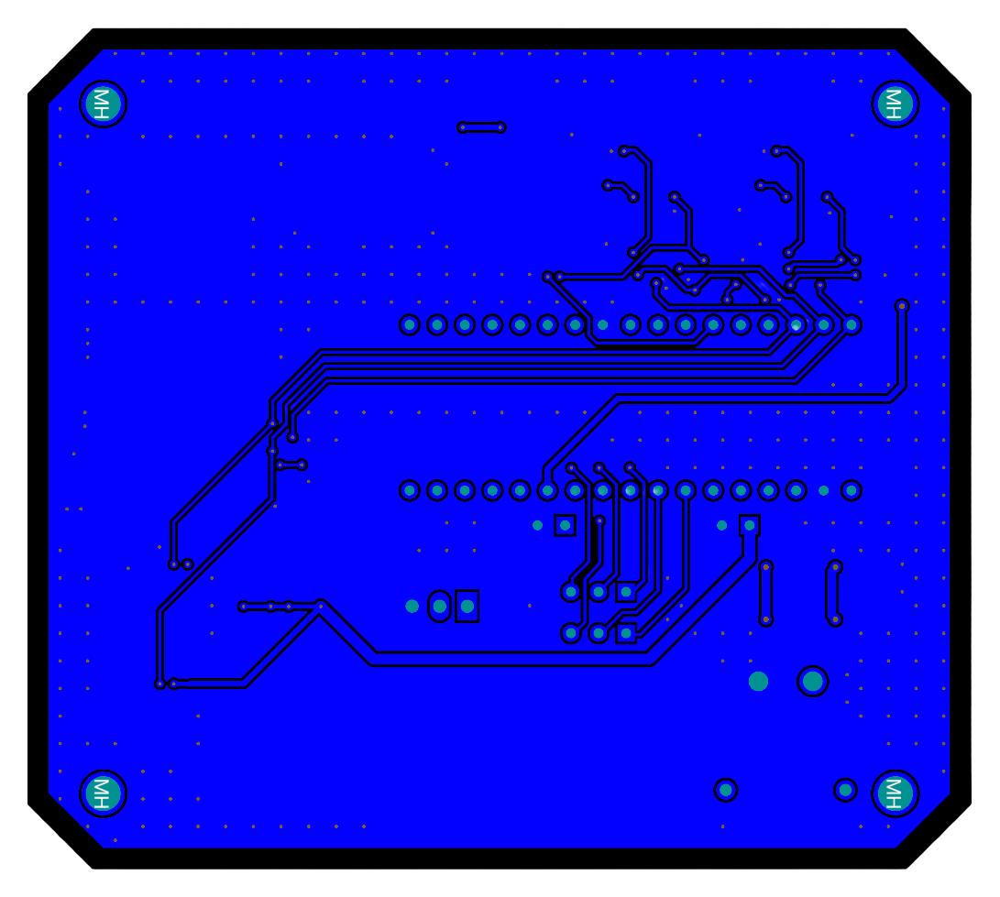
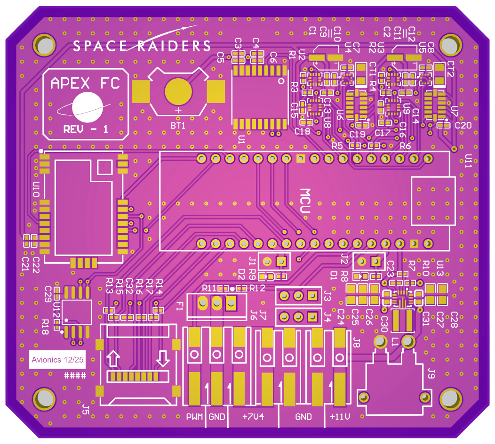
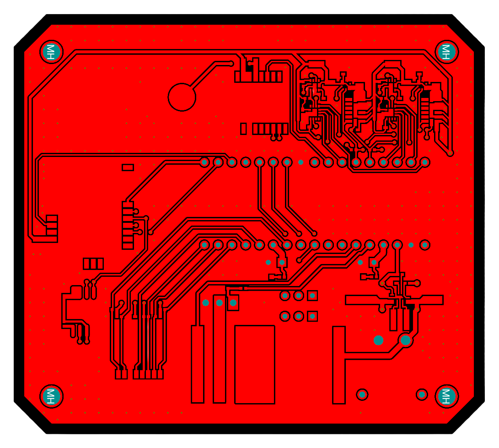
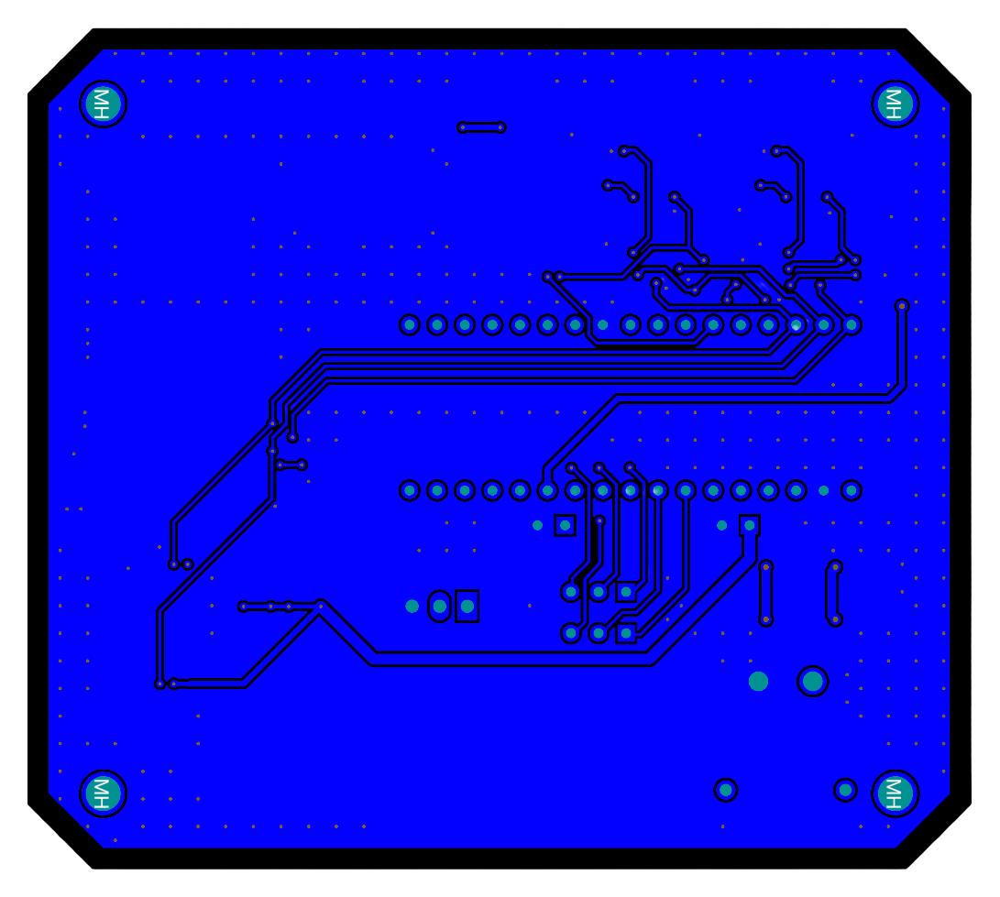

*conceptual

*inspiration
Space Raiders • Aug 2025 – Present
Horizon Tracking Groundstation
**Current Project | Ground Systems, Communications, and Visualization**
HORIZON is a ground tracking and visualization system designed to receive, display, and operate on live telemetry and video throughout a rocket flight. The system is being developed to support both automated tracking and robust fallback operation, ensuring that telemetry and video can still be captured even if closed-loop tracking is unavailable during a flight.
At its core, the groundstation is built around a Raspberry Pi 5 running a locally hosted, web-based dashboard. This dashboard aggregates live telemetry, video, and positional data into a single interface that can be viewed on the station itself or remotely from connected devices such as laptops and tablets. Visualization includes live plotting, 3D trajectory mapping, and real-time orientation rendering using Three.js.
The communication architecture emphasizes redundancy and separation of concerns across multiple RF links:
- Omnidirectional 70 cm link for bootstrapping and tracking telemetry
- Directional 70 cm link for higher-bandwidth telemetry
- 2.4 GHz analog video downlink using a parabolic dish
These links allow the system to acquire initial position data, drive tracking behavior, and maintain independent telemetry and video paths.
For tracking and pointing, the system fuses GPS and inertial data from both the rocket and groundstation to estimate relative position and orientation. Telemetry packets include timestamps to support dead-reckoning between updates, allowing the groundstation to predict rocket position during brief link dropouts and smooth antenna motion. Tracking software is currently being evaluated using ArduPilot-supported workflows, with the option to transition to custom control logic as testing progresses.
The mechanical tracking platform is designed around a surveying tripod base with a planned pan-tilt mechanism using 3D printed cycloidal drives and stepper motors. In parallel, a modular mounting approach is being developed to allow rapid transition between handheld and tripod-mounted operation, ensuring telemetry and video reception remains viable if automated tracking cannot be used.
Current progress includes:
- Functional telemetry dashboard and visualization pipeline validated with simulated flight data
- Antenna and transceiver trade studies in progress
- Mechanical design of the pan-tilt system underway
- Ongoing integration planning between RF, software, and mechanical subsystems
 





Space Raiders • Aug 2025 – Present
APEX Flight Computer
**Current Project | Embedded Systems, Controls, and Hardware Design**
APEX is a custom ESP32-S3 based flight computer designed to support active airbrakes control and real-time telemetry for high-altitude rocketry. The system is being developed as a single, integrated avionics unit to balance capability, reliability, and cost while maintaining flexibility for future architectural changes.
The primary function of APEX is to operate the airbrakes system, enabling precise apogee targeting through closed-loop control. The flight computer ingests data from multiple onboard sensors, performs state estimation and filtering, and executes control logic in real time. In addition to control, APEX packages and transmits telemetry data to the groundstation for live monitoring and post-flight analysis.
#### Flight Computer and Embedded Software
The control architecture is centered around a PID loop driven by fused sensor data. Initial control logic and state machines are implemented and currently being exercised using software-in-the-loop testing with simulated flight data generated from RocketPy. Final tuning will occur once vehicle geometry and aerodynamic parameters are finalized.
Flight software is built on FreeRTOS to support concurrent execution and timing determinism. The ESP32-S3 dual-core architecture is used to separate high-rate sensor conditioning and fusion from control and telemetry tasks, allowing each to run without blocking or resource contention.
Key aspects of the flight computer design include:
- Closed-loop airbrakes control using PID logic driven by fused sensor inputs
- Sensor fusion layer supporting state estimation and health monitoring across redundant sensors
- FreeRTOS-based task scheduling with dual-core partitioning for fusion and control workloads
- Telemetry generation and downlink of flight state and sensor data
The software maintains internal flight states for control purposes, including idle, boost, coast, deployment window, and apogee, while remaining independent of recovery system decision-making in accordance with IREC rules.
#### PCB Design and Hardware Architecture
The APEX hardware is implemented as a custom four-layer PCB designed for reliability in a high-vibration, electrically noisy flight environment. The board is fully routed, DRC clean, and in final design-for-manufacturing review prior to fabrication.
A signal-ground-ground-signal stackup was selected to improve return paths, reduce crosstalk, and minimize EMI sensitivity. While no controlled-impedance routing is currently required, the layout follows best practices to support future expansion and higher-speed interfaces.
Hardware design considerations include:
- Redundant physical sensor suites to support fault detection and graceful degradation
- Onboard regulation supporting 1S to 3S Li-ion input for flexible bench testing and integration
- External UBEC support via vibration-resistant WAGO connectors to accommodate high-current servo loads
- Design-for-assembly optimized for JLCPCB PCBA services, with selective hand assembly for unsupported or bulky components
The PCB has been designed to allow rapid iteration while maintaining a robust baseline suitable for flight testing. Assembly is planned using a combination of automated PCBA and targeted hand assembly to balance cost, reliability, and component availability.


Space Raiders • Aug 2024 – Jul 2025
Airbrakes Flight Controller
**Foundational Project | Embedded Controls and Avionics**
The Airbrakes Flight Controller was my first major avionics project within Space Raiders and marked my initial work on embedded control systems for active flight regulation. The system was developed to autonomously actuate airbrakes in flight to control apogee and was built using perf-board hardware and off-the-shelf sensor modules.
I served as the early lead and sole system owner, responsible for the end-to-end design, implementation, and integration of the controller. The project flew during the Lone Star Cup on Matador II and later on RaiderX during both pre-competition testing and IREC 2025.
Key contributions included:
- Designed and integrated hardware and firmware for autonomous airbrakes control using discrete sensor modules
- Iterated timing, diagnostics, and data integrity through test flights and failure-driven rebuilds
- Coordinated with avionics, recovery, and airbrakes teams to align control behavior with mission constraints
- Applied early filtering and state estimation techniques to stabilize sensor data feeding PID control logic

iOS Developer • Aug 2023 – May 2024
ConnectEDU
**Software Project | Mobile Development and Team Coordination**
ConnectEDU was a cross-platform student engagement application developed with Android and backend teams to support event participation and progress tracking within a school environment. The project advanced through internal testing before being discontinued due to the adoption of a third-party solution by the school.
Key contributions included:
- Designed and implemented the iOS app architecture and UI using SwiftUI with a focus on modularity
- Integrated frontend components with backend APIs for authentication and data retrieval
- Coordinated development milestones with Android and backend contributors to support cross-platform alignment